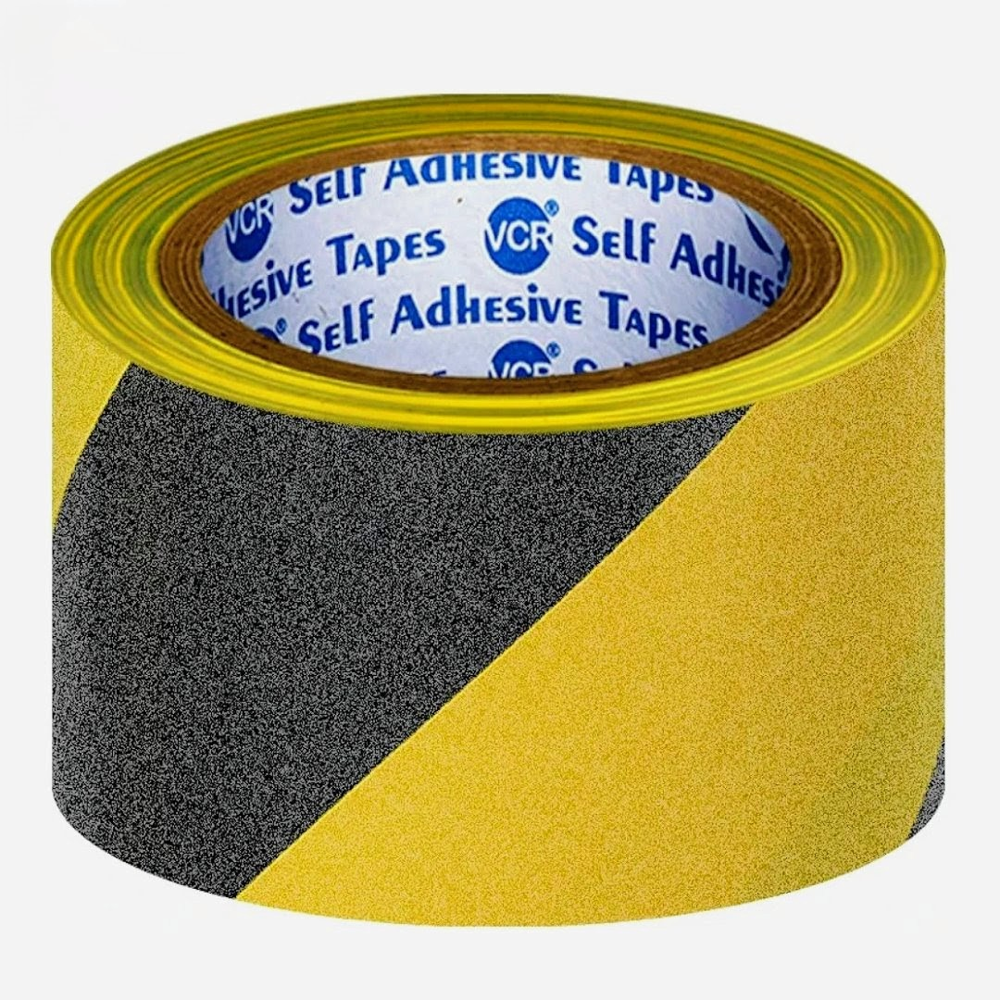
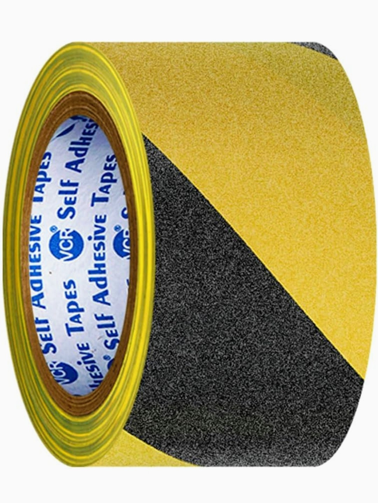
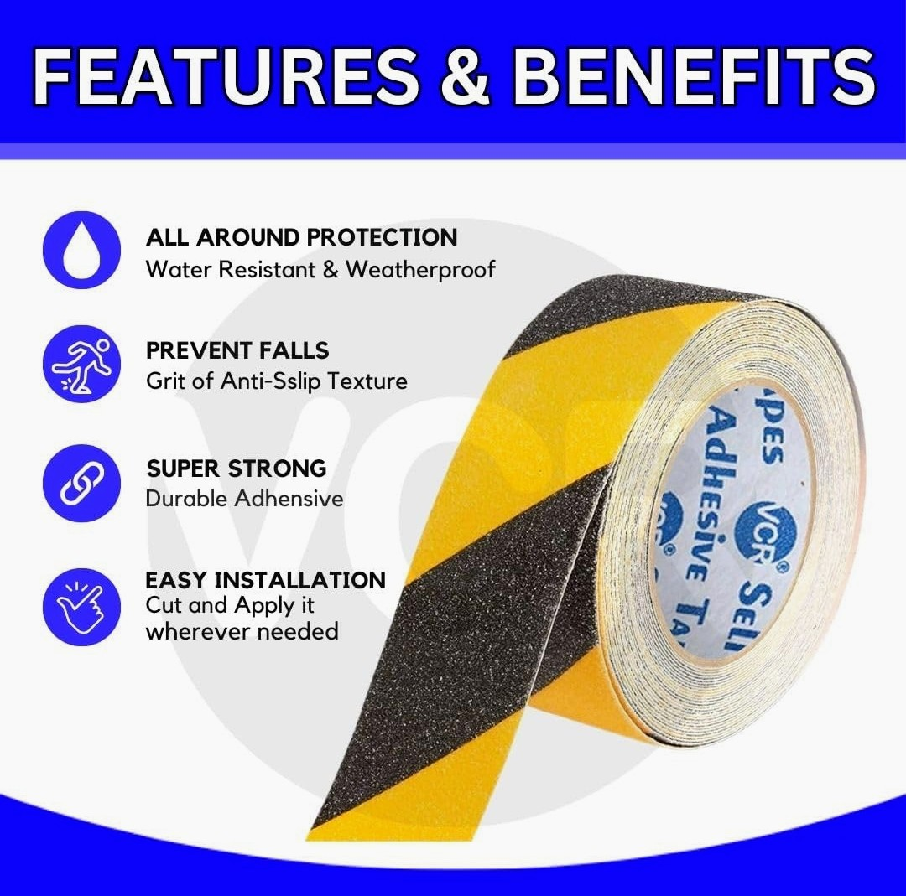
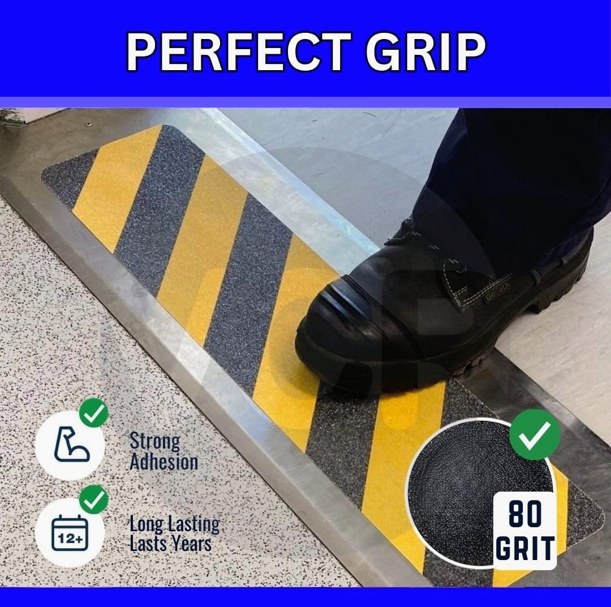
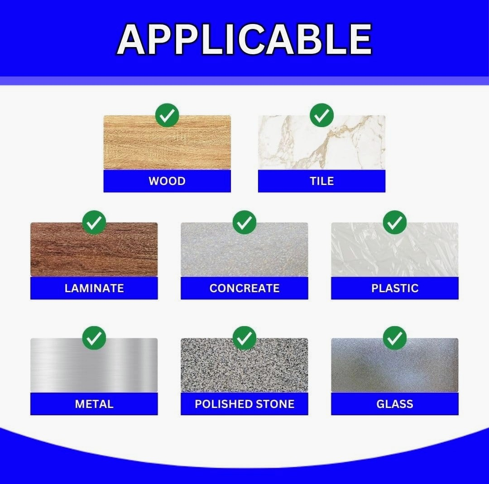
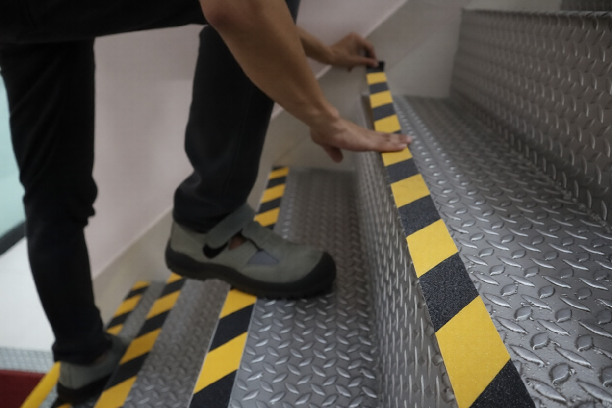
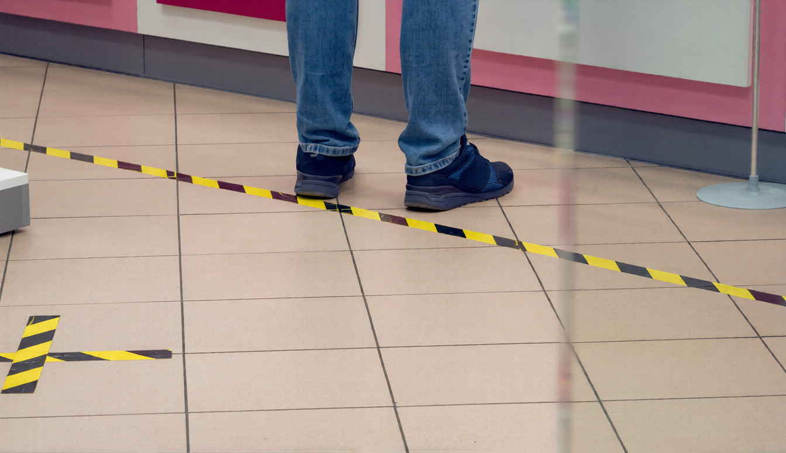
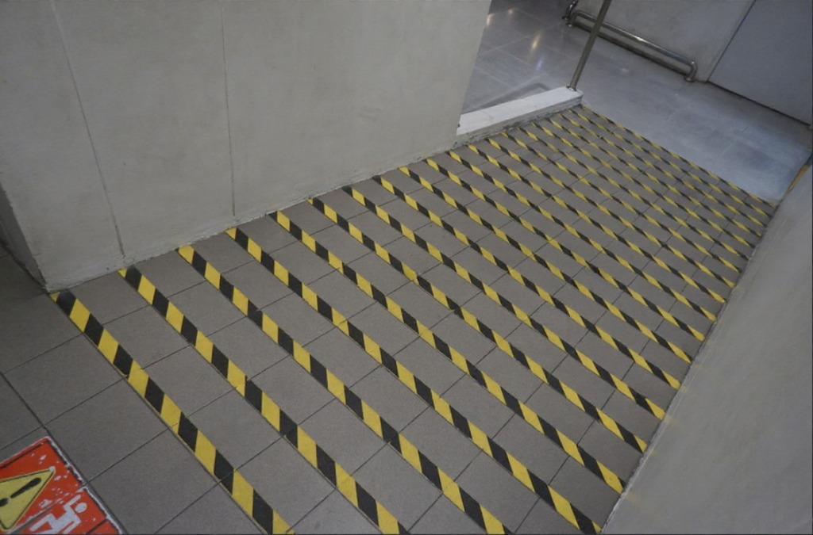

Product Overview
Anti Skid Floor Marking Tape is designed to provide excellent slip
resistance while clearly marking hazardous or designated areas.
The textured surface improves traction and helps prevent accidents
in high foot-traffic and industrial environments.
These tapes are easy to apply on clean, dry surfaces and are suitable
for both indoor and outdoor use. They are commonly used in factories,
warehouses, stairways, ramps, and commercial spaces.
Key Features
- High slip resistance to reduce accident risk
- Durable abrasive surface for long-term performance
- Strong adhesive backing for secure application
- High visibility for safety and hazard marking
- Suitable for indoor and outdoor environments
Specifications
- Material: PVC with abrasive grit coating
- Adhesive: Pressure-sensitive adhesive
- Surface Finish: Anti-slip textured
- Available Colours: Black, Yellow, Yellow/Black
- Standard Widths: 25 mm, 50 mm, 75 mm
- Application: Clean, dry, and smooth surfaces
Applications & Use Cases
- Factories and manufacturing units
- Warehouses and loading bays
- Staircases, ramps, and walkways
- Commercial buildings and malls
- Parking areas and industrial floors
Best Suited For
- Factories with wet or oily floors
- Staircases and ramps in warehouses and plants
- High foot-traffic zones prone to slipping
Selection Note
Surface must be cleaned thoroughly before application.
For Indian conditions, wider tapes are recommended in monsoon-prone
or high-dust environments.
Commonly Used Along With
- Caution Tapes for hazard identification
- Reflective Tapes for low-light visibility
- Floor Protection Sheets during installation
Product FAQs
-
Is anti skid floor marking tape suitable for oily or wet floors?
Yes. The abrasive surface provides enhanced grip and is commonly used
in areas where oil, water, or moisture increases slipping risk.
-
How long does the tape last under heavy foot traffic?
Lifespan depends on traffic intensity and surface preparation.
In industrial environments, properly applied tape typically lasts
several months to over a year.
-
Can this tape be used outdoors in Indian weather conditions?
Yes. The tape is suitable for outdoor use, but for areas exposed to
heavy rain or dust, surface preparation and firm pressure during
installation are critical.
-
Does the tape leave residue after removal?
When removed carefully, residue is minimal. Any remaining adhesive
can usually be cleaned with standard industrial cleaners.
-
What width should be selected for staircases and ramps?
Wider tapes (50 mm or 75 mm) are recommended for stairs, ramps,
and high-risk zones to improve visibility and slip resistance.
-
Is this tape compliant with workplace safety practices?
Anti skid floor marking tapes are widely used to support factory
safety standards and internal safety audits in industrial facilities.